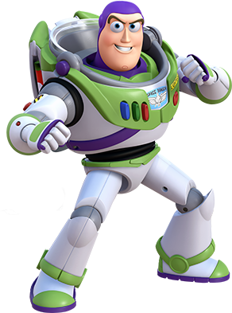
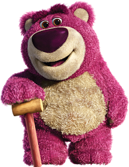

|
Datos Generales y Sinopsis:
|

Toy Story 3 es la tercera película de la saga de animación Toy Story. La película fue distribuida en
cines en formato
analógico, digital y Disney Digital 3D. El filme fue producido por Walt Disney Pictures y Pixar
Animation Studios y
lanzada al mercado por Disney. Obtuvo dos premios Óscar en las categorías de Mejor Película Animada
y Mejor Canción Original.
Además, fue nominada a Mejor Película, Mejor Mezcla de Sonido y Mejor Guion Adaptado.
Andy se ha hecho mayor y se prepara para marcharse a la universidad, lo que provoca la preocupación
de Buzz, Woody y el resto de la banda
por su incierto futuro, es una divertidísima aventura nueva en 3D que hace aterrizar a nuestros
amigos en una guardería llena de niños
salvajes que inmediatamente ponen su dedos pringosos en sus "nuevos" juguetes. Éstos tratan de
mantenerse juntos en esta caótica situación
asegurándose de que "ningún juguete se queda atrás". Mientras, Barbie conoce en persona a
Ken.
Recuperado de:
El Mundo. (2010). Toy Story 3. 28 de febrero del 2021, de El Mundo Sitio web:
https://www.elmundo.es/elmundo/trailers/fichas/2010/06/2415_toy_story_3.html
Wikipedia. (2021). Toy Story 3. 28 de febrero del 2021, de Wikipedia Sitio web:
https://es.wikipedia.org/wiki/Toy_Story_3
|
¿Por qué elegí Toy Story 3?
|

Elegí a Toy Story como la película favorita, ya que considero que es una película que todas las
personas no importando
su edad pueden llegar a disfrutar viendola. Existen pocas sagas de películas que tu vas creciendo
con ellas, disfrutas, gozas, recuerdo
de pequeño ver Toy Story 1, luego salió la 2 y cada una iban abordando distintas etapas no solo de
Andy sino también de uno
como espectador, ibas creciendo junto a él y en la tecera entrega de esta saga ya con Andy marchándose
a la universidad, todo su entorno cambio, ya no es la misma habitación de siempre con papel tapiz de nubes,
en ese momento te percatas todo el tiempo que ha pasado y que tu como Andy ya tienen distintas ambiciones,
otras responsabilidades, objetivos y todo aquello
que te importa e interesa quizás ya no es lo mismo que era hace diez años;
pero a pesar que Andy ya era un hombre seguia teniendo un cariño especial
por todos aquellos juguetes y recordando aquellos
momentos que le dieron tanta alegría a lo largo de todos esos años hasta el punto de que le doliera
realmente despedirse de ellos y buscarles un
lugar donde desde su punto de vista estarían mejor a pesar de ser solo juguetes.
 Otra escena de la película que es muy triste es cuando la banda queda atrapada en el incinerador y
no hay forma de escapar y todos
en un acto de amistad verdadera se aferran unos a otros esperando el final como la familia que ellos
son.
En conclusión, elegí Toy Story 3 no solo porque es una película animada de Disney Pixar que siempre
se destacan por su animación
y esta película no fue para nada la excepción; sino también por la cantidad de valores y
sentimientos de amistad, cariño, lealtad que
se pueden observar facilmente a lo largo del film, la película te deja una enseñanza desde que la empiezas a ver
hasta que la terminas.
Otra escena de la película que es muy triste es cuando la banda queda atrapada en el incinerador y
no hay forma de escapar y todos
en un acto de amistad verdadera se aferran unos a otros esperando el final como la familia que ellos
son.
En conclusión, elegí Toy Story 3 no solo porque es una película animada de Disney Pixar que siempre
se destacan por su animación
y esta película no fue para nada la excepción; sino también por la cantidad de valores y
sentimientos de amistad, cariño, lealtad que
se pueden observar facilmente a lo largo del film, la película te deja una enseñanza desde que la empiezas a ver
hasta que la terminas.